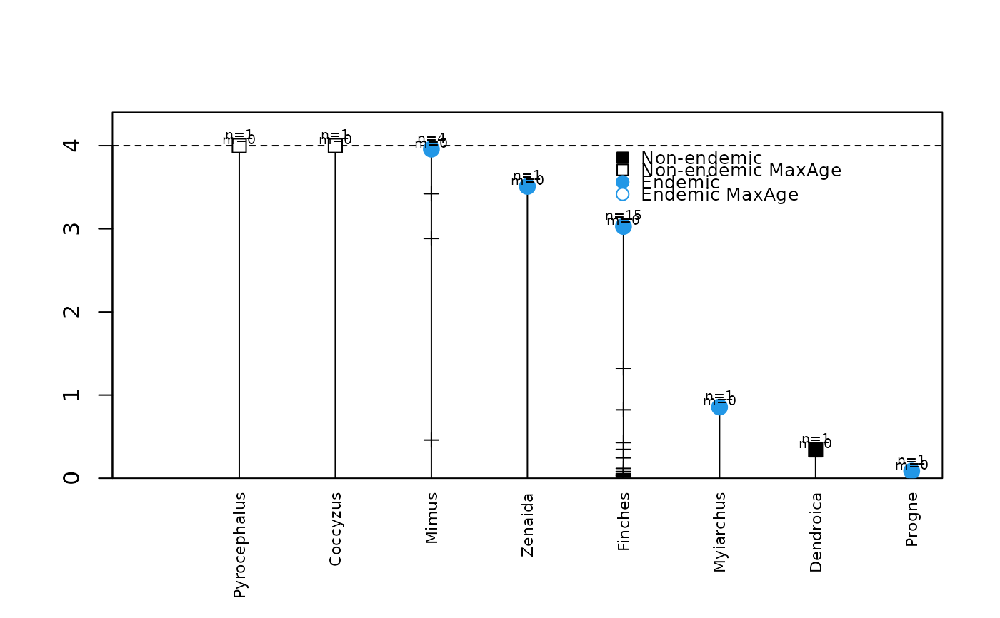

Plot colonisation and branching time of species found on an island dataset.
Source:R/DAISIE_plot_island.R
DAISIE_plot_island.RdProduces an image with the times of colonisation, branching times, clade name and clade status for all clades found in a given dataset.
Arguments
- island
Island data object. Can be in DAISIE list format (see Galapagos_datalist and DAISIE_data_prep for examples) or in table format (see Galapagos_datatable for an example).
- island_age
Age of island in appropriate units. In
DAISIE_plot_age_diversity()andDAISIE_plot_island()if island input is in table format, the age of the island must be specified. If island input is in DAISIE list format, this option will override the island age specified in the island list.
Details
R plot showing for each clade in the island object: time of colonisation, branching times, species status (endemic or non-endemic), total number of species in clade (n), number of species not sampled (m).
References
Valente, L.M., A.B. Phillimore and R.S. Etienne (2015). Equilibrium and non-equilibrium dynamics simultaneously operate in the Galapagos islands. Ecology Letters 18: 844-852.
Examples
### Plot Galapagos islands dataset from data table (specify island age)
utils::data(Galapagos_datatable)
DAISIE_plot_island(Galapagos_datatable, island_age=4)
#> Colonisation time of 7.456 for Coccyzus is older than island age
#> Colonisation time of 10.285 for Pyrocephalus is older than island age

### Plot Galapagos islands dataset from datalist (no need to specify
## island age)
utils::data(Galapagos_datalist)
DAISIE_plot_island(Galapagos_datalist)